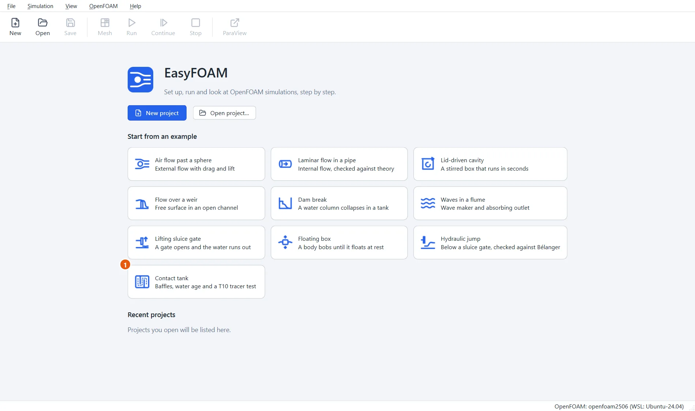
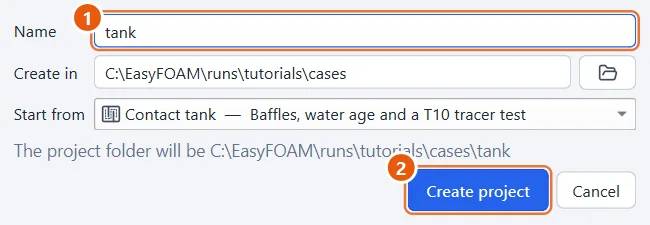
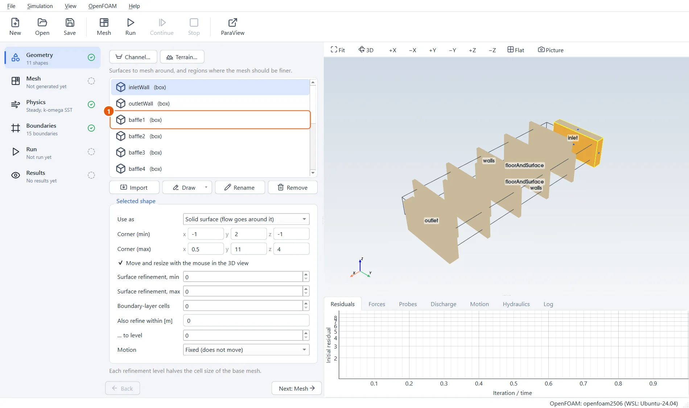
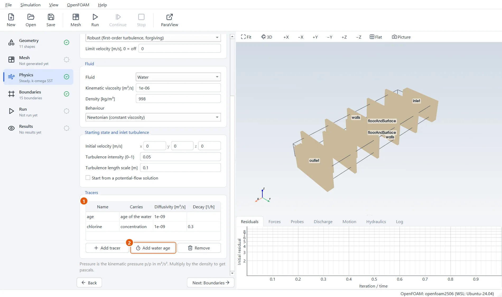
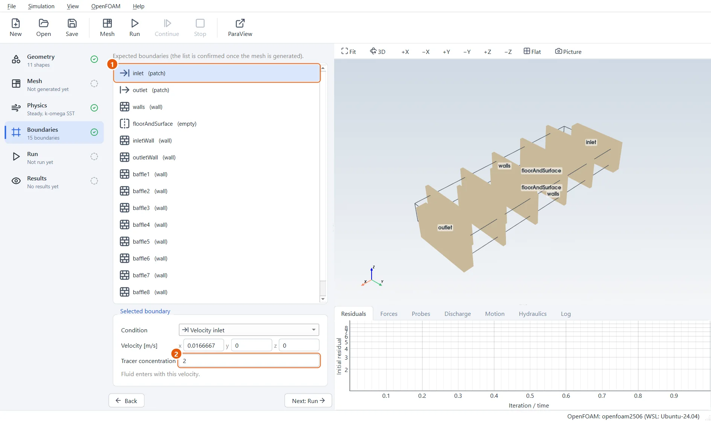
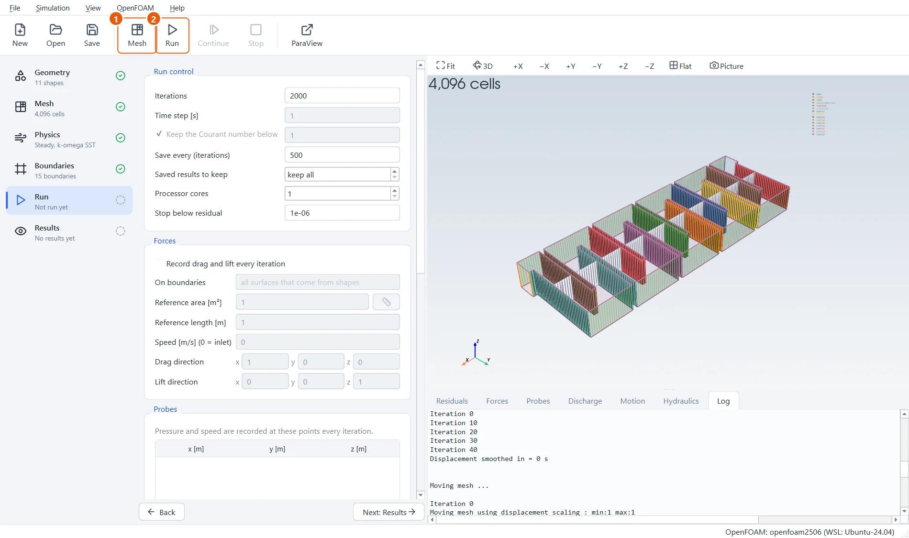
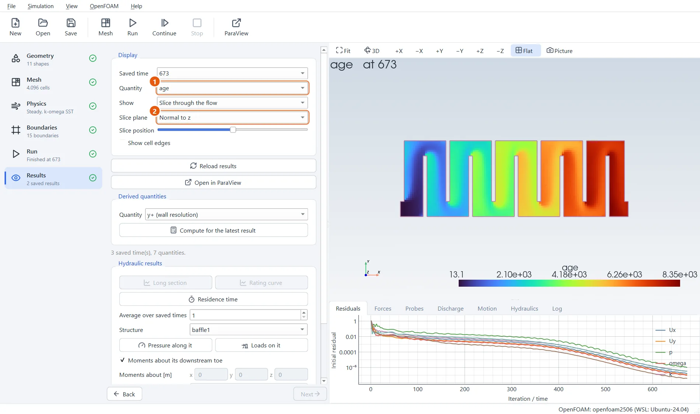
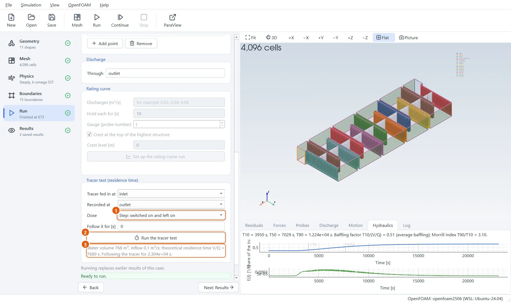
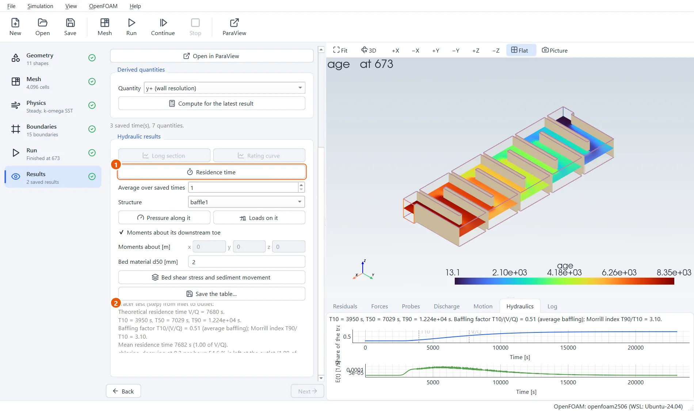

Tutorial 13 of 15
Contact tank: water age and a tracer test
How long does the water stay in a baffled chlorine contact tank? Map its age, follow a tracer through it and read off T10 and the baffling factor.
Disinfection credit in a chlorine contact tank depends on T10: the time by which the first tenth of the water has passed through. Baffles stop the water from short-circuiting, which raises T10 towards the theoretical residence time V/Q. Their effect is summed up in the baffling factor T10/(V/Q).
In this tutorial you solve the steady flow through a tank with nine cross baffles, look at the age of the water and a decaying chlorine residual, and then run a tracer test the way it is done in the field: switch a tracer on at the inlet and record it at the outlet.
What you will learn
- carry several tracers: the age of the water and a chlorine residual that decays
- set the concentration that enters at an inlet
- run a step tracer test in the frozen flow
- read T10, the mean residence time, the baffling factor and the Morrill index
Computer time: about a minute for the flow and half a minute for the tracer test, on one core.
1Open the example
Start EasyFOAM. This case is one of the examples on the start page: it comes with every setting filled in, and this tutorial walks through each of them so that you understand the case and could build it yourself.
- Click Contact tank.


2Name the project
The project is an ordinary folder that EasyFOAM creates for you.
- Type a name, for example
tank. - Click Create project.


3Nine baffles
The tank is 30 m by 10 m and 3 m deep, seen from above (one cell over the depth). Nine cross baffles 3 m apart leave a 2 m gap at alternate ends, so the water winds from one corner to the other.
- The baffles are plain boxes, baffle1 to baffle9.


4Age and chlorine
In Physics, the tank carries two tracers. age counts the seconds since the water came in, so dead zones show up as old water. chlorine comes in at 2 mg/L and decays at 0.3 per hour, a first-order rate.
- Two tracers: the age of the water and chlorine, decaying at
0.3per hour. - Add water age adds a tracer that counts seconds.


5What comes in
The inlet sends in 0.1 m³/s through a 2 m opening. Its tracer concentration is the chlorine dose: 2 mg/L. The age needs none: water enters with age zero.
- The boundary inlet.
- Tracer concentration:
2.


6Mesh and solve the flow
The flow is steady (simpleFoam). The mesh takes a few seconds and the flow about a minute; the tracers are solved along with it.
- Click Mesh in the toolbar (or press F5).
- Click Run in the toolbar (or press F6).


7The age of the water
When the run is done, show age in the Results step, seen from above. Young water (blue) runs round the ends of the baffles; the corners behind them hold older water. The age of the water leaving is V/Q, 7680 s, as it must be for a steady flow.
- Quantity:
age, in seconds.


8The tracer test
In the Run step, under Tracer test, a tracer is fed in at the inlet and followed to the outlet in the frozen flow. A step test switches it on and leaves it on, as in the field. Leave Follow it for at 0: EasyFOAM follows it for three times V/Q.
- Dose: Step.
- Press Run the tracer test.
- The water volume, the inflow and V/Q.


9T10 and the baffling factor
In Results, press Residence time. The plot shows F(t), the share of the tracer that has left, with T10 and V/Q marked. With nine baffles the baffling factor is about 0.5: average baffling. Without them it drops to about 0.2. The last line says how much of the chlorine is left at the outlet, worked out from these residence times.
- Press Residence time.
- T10, T50, T90, the baffling factor and the chlorine left at the outlet.

